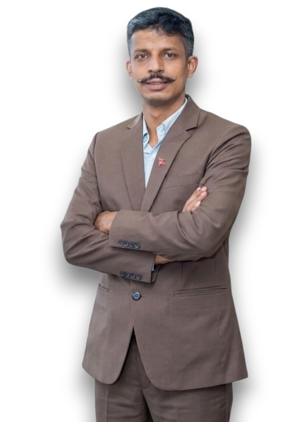
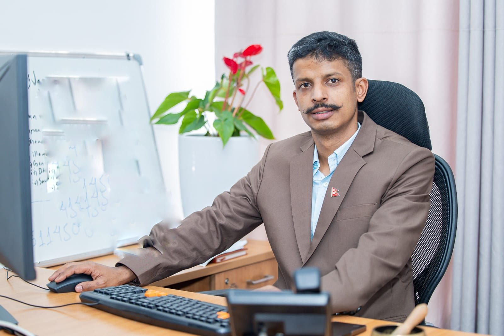

Namaste, I’m
SurendraBajagain
सुरेन्द्र बजगाईं
Journalist turned Press Facilitator to the Prime Minister of Nepal. A reporter by training and a communicator by practice, building a clear, trusted line between public office and the people it answers to.

Bylines across Nepal’s newsrooms


Current role
From the newsroom to the nation’s press desk
Press Facilitator to the Prime Minister
Surendra coordinates the Prime Minister’s engagement with the press: keeping newsrooms informed, arranging access, and making sure what the government says reaches the public accurately and on time.
- Day-to-day liaison between the Prime Minister and national and international media
- Briefings, press access and coordination for official programmes
- Continuity from his earlier role leading press coordination at Kathmandu Metropolitan City
Career
A career built on clear information
A path that moved from reporting the news to coordinating how public leaders communicate it, with the same commitment to accuracy at every step.
-
Prime Minister’s Office
Press Facilitator to the Prime Minister
-
Kathmandu Metropolitan City
Press Coordinator, Mayor’s Secretariat
-
National newsrooms
Journalist & investigative reporter
Informing the public,
serving the nation
Mission
To keep a clear, trusted line between public office and the people it answers to. That means journalists can reach the people they need to question, briefings are timely, and what the government says reaches citizens accurately.

Vision
Public communication measured by what citizens actually understand. Plain, accessible messages about policy and public decisions, grounded in the verification habits of the newsroom and in the realities of life beyond the capital.
Three crafts,
one purpose
Years of reporting in Nepal’s newsrooms, then running the press desk for senior public leaders. The work has changed shape, but the purpose has stayed the same: clear public information that people can trust.
What he does
-
Press relations
Managing media access, briefings and the steady flow of information between office-holders and journalists.
-
Investigative reporting
Research-driven stories grounded in documents, field visits and patient verification.
-
Public communication
Turning policy and public decisions into plain messages citizens can understand.
Moments from the work

I want to contribute to my own soil.
Surendra Bajagain, speaking to Republica, January 2026
National outlets
Reporting experience across Nepal’s digital news landscape, from general news portals to investigative and current-affairs sites.
Working on a story, an interview or a collaboration?
Media requests, speaking invitations and professional enquiries are welcome.